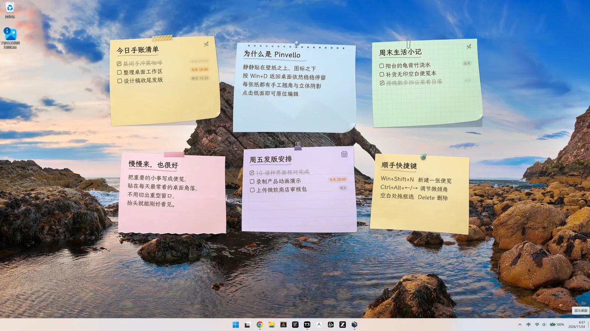

Windows 11 壁纸层拟物便笺 · v0.2.0
把重要的小事，
真正贴在桌面上
驻留于桌面壁纸之上、图标之下——不是悬浮在窗口顶层的遮挡物。无惧 Win+D 显示桌面与资源管理器重启，自带 64 位随机三维翘角纸感与物理拟真销毁动效。
Windows 11 原生单进程
100% 离线优先
零遥测 / 无账号
10 语种自适应
互动桌面沙盒 · 动手试试手感
可直接拖拽便笺、勾选待办，或点右上角演示 Win+D
主题色卡
REAL WINDOWS 11 CAPTURE
不是网页概念图，而是 Windows 11 原生 Direct2D 渲染实景
基于 Rust 与 DirectComposition 预乘 Alpha 渲染，边缘柔和立体，支持 PerMonitorV2 多屏高分屏。点击图片可放大查看细节。

点击图片放大细节5 种纸张款式、7 种固定件与柔和景深阴影直接融合在 Windows 11 桌面壁纸层。
TACTILE PHYSICS & FOLEY
删掉一张完成的小事，也要很有仪式感
搭载 6 种物理删除动效与 44.1kHz 程序化拟真音效（撕胶带、揉皱纸球、投掷入桶、燃烧声、碎纸切条）。偏好设置里随时免费试玩，配合 10 条撤销栈秒删秒回。
Windows 11 真机演示预告片（含实机音效）
1280×720 网页优化版 · 点击播放按需加载，不占用首屏流量
Shell COM 自动定位桌面回收站
44.1kHz 程序化拟真音效
10 条删除撤销栈
CRAFTSMANSHIP & EXTENSIONS
温润手绘字形，与面向创作者的本地扩展体系
6 款 SIL OFL-1.1 内置手绘体 + 全部系统字体
开箱即用霞鹜文楷与全部本机系统字体；Pro 解锁全部 6 款精选多语种设计字体，或直接向 fonts/ 目录放入自定义 .ttf / .otf。
LXGW WenKaiFREE
春风十里 · Aa
YozaiPRO
今日小确幸 · Aa
Smiley SansPRO
灵感闪现 · Aa
Ark Pixel 12pxPRO
像素日志 · 01
Shantell SansPRO
Quick Notes
GaeguPRO
오늘의 메모
10 种界面语言即时切换，无需重启
自动识别 Windows 系统语言初始化，也支持随时在偏好设置一键切换，同步更新菜单、字体检索与 @today/@明天 时间关键词。
简体中文
繁體中文
English
日本語
한국어
Deutsch
Français
Español
Português
Русский
@today / @今天 失焦自动锚定真实日历日期
DirectWrite 语言文字过滤
10 款线性角落插画 + doodles/*.svg 关键词自动匹配
点击下方演示词，模拟自定义文件 coffee-咖啡-拿铁.svg 如何随正文内容自动显现：
当前匹配图标：
calendar
themes/*.json 自定义色卡与 %LOCALAPPDATA% 扩展目录
只需一个 10 行的 UTF-8 JSON 文件，即可为 5 个便笺色槽定义专属纸张与胶带透明色。
{
"name": "海盐假日",
"tints": [
["#FAF0D7F0", "#E2C57CCC"],
["#D7EEF7F0", "#88BFD8CC"],
["#DCF2E8F0", "#92C7B0CC"]
]
}
%LOCALAPPDATA%\Pinvello\{doodles, themes, fonts}\
TRANSPARENT PRICING
免费版开箱即用，Pinvello Pro 一次性终身买断
没有订阅制焦虑，没有广告与会员弹窗。免费版即可满足轻量桌面便笺日常；需要无限贴纸与全套手作纸感时，一次买断永久解锁。
Pinvello 免费核心版
免费
开箱可用 · 绝不限制既有便笺的阅读与编辑
- 桌面同时保留最多 3 张活跃便笺（超出 3 张的旧数据仍可读可改可删）
- 全部 10 种界面语言即时切换，带多语言 @today/@明天 时间胶囊
- 霞鹜文楷（LXGW WenKai）+ 全部本机 Windows 系统字体
- 随壁纸自适应 & 经典暖阳两套主题、微翘卷角纸、默认胶带/图钉
- 撕下飘落 / 柔和淡出 / 无动画 + 拟真音效，支持 Ctrl/框选与 10 条撤销栈
- 偏好设置内免费无限制试玩全部 8 种删除特效与 6 款内置手绘字体
Pinvello Pro
一次买断
通过 Microsoft Store 内购解锁 · 绑定微软账号多机恢复
- 无限数量桌面便笺，自由平铺你的整块 4K 桌面或双屏工作区
- 解锁全部 6 款内置开源手绘体（悠哉、得意黑、方舟像素、Shantell、Gaegu）
- 解锁全部 6 套高辨识度主题（莫兰迪灰雾、复古牛皮、清爽森系、甜心马卡龙）
- 手撕毛边、真实镂空打孔、横线手账、方格点阵 5 种纸张 + 全 8 种固定件形态
- 全部 8 种删除特效（揉成纸团、丢进回收站、燃尽化灰、碎纸机、随机）+ 150–3000ms 时长
- 一键「自动排列」避让桌面图标与锁定便笺，支持 doodles/、fonts/、themes/ 扩展